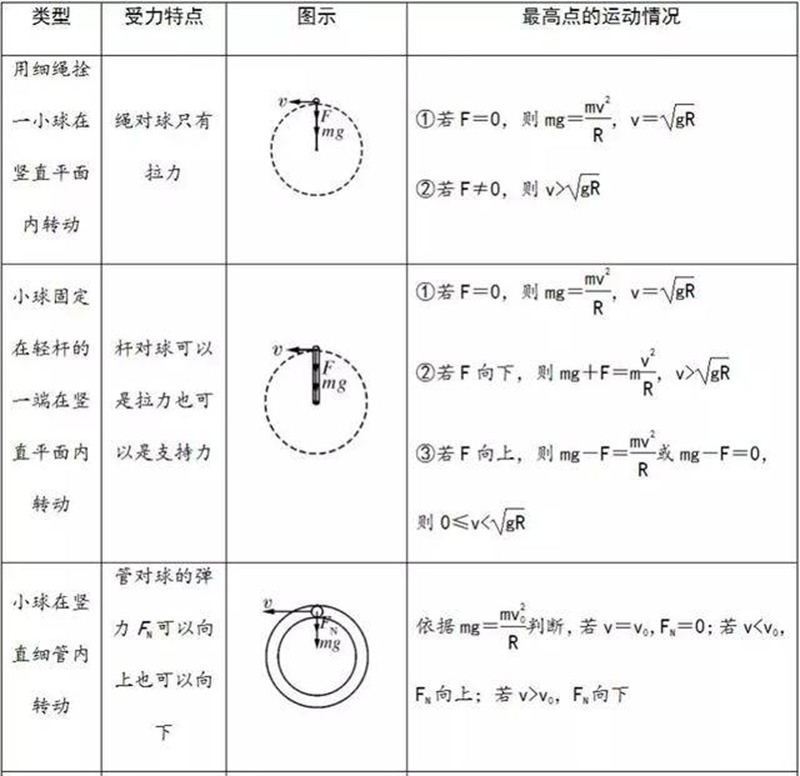

返回课程列表
第一课
绪论
赛车运动与力学的紧密关系
⏱️ 约30分钟
赛车是力学原理的终极试验场。每一辆F1赛车都是空气动力学、材料力学和动力学的结晶。速度的极限就是力学的极限。
赛车中的力学挑战
赛车运动追求速度的极限，而速度的极限由力学决定。轮胎抓地力限制了加速和转弯能力，空气阻力限制了最高速度，结构强度限制了安全性。

F1赛车的力学数据
一级方程式赛车的力学参数：
- 最高速度：约370km/h，受限于空气阻力（与速度平方成正比）
- 加速性能：0-100km/h约2.5秒，0-200km/h约5秒
- 制动性能：100-0km/h约15米，减速度达5g
- 过弯G力：高速弯道侧向加速度可达6g，超过战斗机
力学三分支的赛车应用
静力学分析赛车结构强度，运动学描述赛车运动轨迹，动力学研究力与运动的关系。三者结合才能打造一辆完美的赛车。
赛车设计的力学框架
理论力学在赛车中的全面应用：
- 静力学→结构设计：碳纤维单体壳承受碰撞冲击，保护车手安全
- 运动学→赛道分析：计算每个弯道的最优入弯点、弯心和出弯点
- 动力学→性能调校：调整悬挂刚度、空力套件角度优化操控
- 综合应用：模拟器中整合所有力学模型，赛前预演每一圈